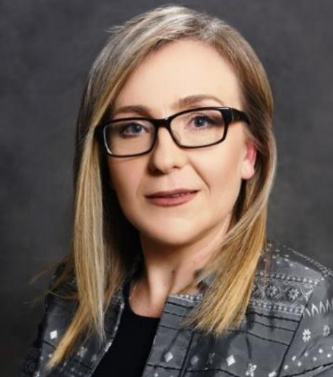
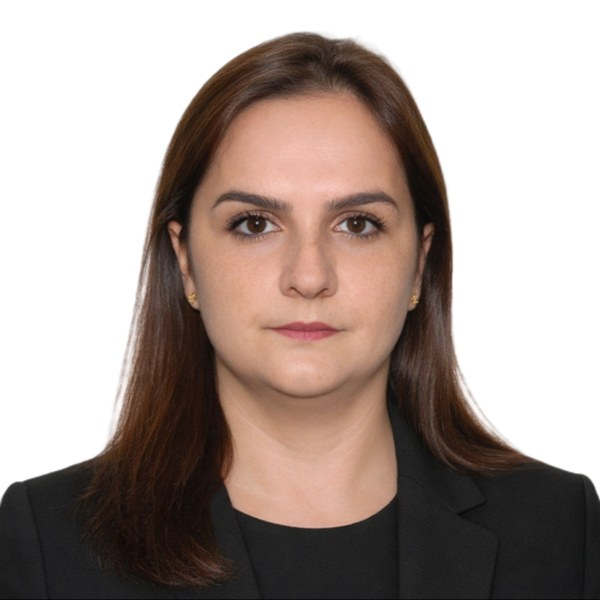
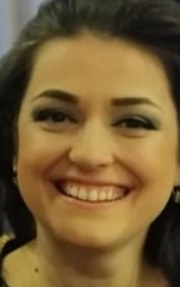
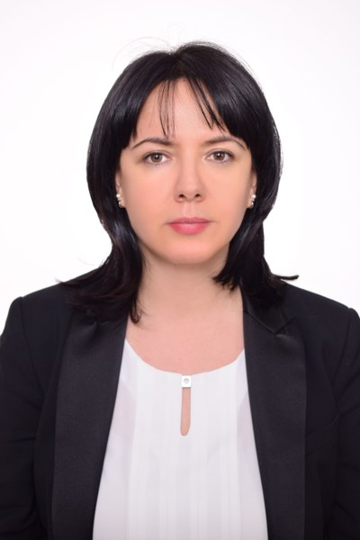
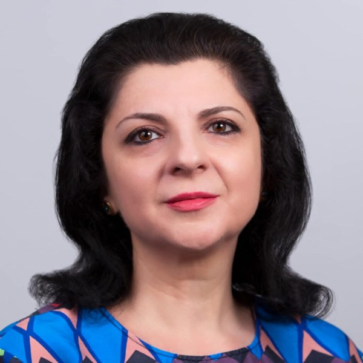

Project leads
-

Ana Ktona
Professor, Department of Informatics, Faculty of Natural Sciences, University of Tirana
Ana Ktona leads the Data Analysis and Artificial Intelligence research group, applying AI to data mining and adaptive systems.
-
Alex Thomo
Professor, Department of Computer Science, University of Victoria, Canada
Alex Thomo works on algorithms for large-scale data, knowledge graphs and language models, and on privacy and fairness in AI.
Members
-

Emiranda Loka
Lecturer, Department of Informatics, Faculty of Natural Sciences, University of Tirana
Emiranda Loka works on educational technology and graph neural networks.
-

Ilma Lili
Lecturer, Department of Informatics, Faculty of Natural Sciences, University of Tirana
Ilma Lili completed her PhD in 2026 on artificial intelligence for automatic decision-making.
-

Alda Kika
Professor and Head of the Department of Informatics, Faculty of Natural Sciences, University of Tirana
Alda Kika works on knowledge management and human-computer interaction, including interfaces for people with disabilities.
-

Linda Mëniku
Professor, Department of Linguistics, Faculty of History and Philology, University of Tirana
Linda Mëniku is a linguist and the author of Discovering Albanian and Colloquial Albanian.
Also on the project
Arbër Ceni, Anxhela Kosta, Mirvjen Ulqinaku and Endri Xhina.
We also thank the ten speakers who lent their voices to the corpus and the listeners who took part in the perceptual evaluation. In keeping with the consent under which the corpus was released, they are not named.